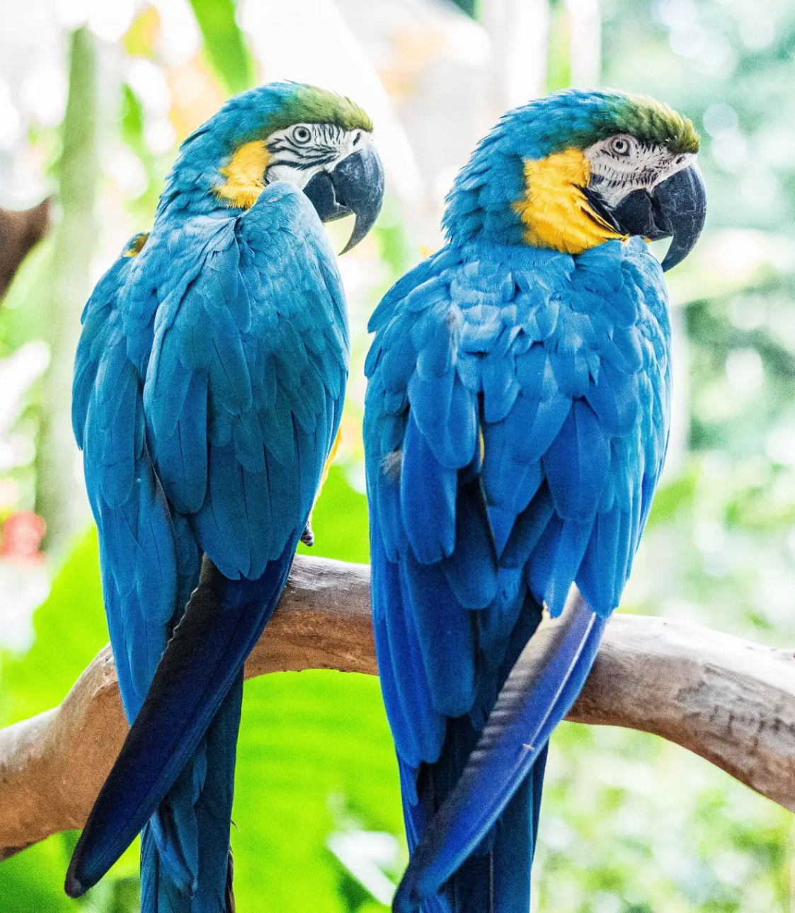
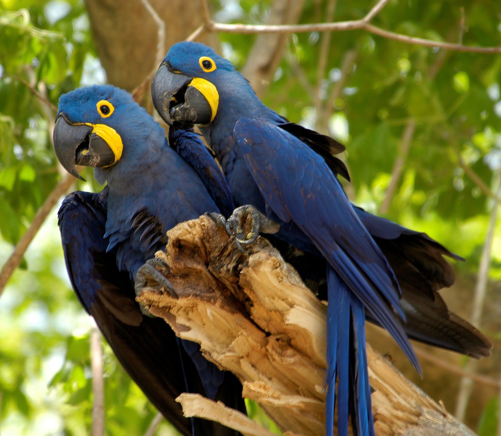

Arara-Azul
da família PsittacidaeA arara-azul, também chamada arara-azul-grande, é uma espécie de ave, encontrada no Brasil, que se caracteriza por ser a maior entre os psitacídeos (família Psittacidae), chegando a atingir mais de um metro de comprimento, medindo-se da ponta do bico à ponta da cauda.
Essa espécie habita diferentes formações vegetais, sendo encontrada em formações savânicas e até em ambientes de floresta no Brasil, Paraguai e Bolívia. As maiores populações dessa espécie de arara são encontradas no Pantanal.
A arara-azul, como o nome sugere, destaca-se pela coloração azul de suas penas, mais precisamente da cor azul-cobalto. Na cabeça, é possível perceber um anel de cor amarela ao redor dos olhos. Além disso, a coloração amarela é percebida nas pálpebras e base da boca. O bico desse animal é grande e curvo, dando a impressão de que esse é maior que o próprio crânio.
Esses animais são aves sociais, sendo encontradas em pares ou grupos. Esses grupos podem ser encontrados em locais de alimentação e nos chamados dormitórios, que funcionam como áreas para o descanso desses animais. As araras-azuis apresentam alta capacidade de socialização entre os membros do grupo.
"Me leva em suas lindas penas, e no ar... só nós dois apenas, minha doce Ararinha Azul."
- Reino: Animalia
- Filo: Chordata
- Classe: Aves
- Ordem: Psittaciformes
- Gênero: Anodorhynchus
- Família: Psittacidae
A arara-azul apresenta um bico bastante resistente, o qual a auxilia na sua alimentação. Esses animais alimentam-se, principalmente, de frutos de palmeiras, tais como buriti, licuri e macaúba. Geralmente, as araras-azuis são observadas alimentando-se sobre o solo e em bandos, diferentemente da maioria das espécies de araras que se alimenta no topo de árvores. A alimentação em grupo é uma forma importante de proteção.
A arara-azul (Anodorhynchus hyacinthinus) é uma espécie que não se encontra extinta, porém está classificada como vulnerável na Lista Vermelha de Espécies Ameaçadas, da União Internacional para a Conservação da Natureza e dos Recursos Naturais (IUCN).